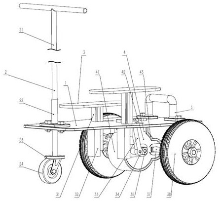

Invention Patents
Two ideas I sketched out of curiosity, then made official
🛴 A Scooter
Granted
What it is
An invention patent for a redesigned scooter. It reworks the scooter's structure and key functional components — improving balance, ride comfort, and overall performance.
Why it matters
The goal is a smoother, more stable, and safer ride. Instead of settling for an off-the-shelf design, I wanted to understand how a scooter actually works and rebuild the parts that could be better.
🚤 A Water Surface Floating Object Collection Boat
Under examinationWhat it is
An invention patent for a boat that automatically collects floating objects from the water surface. It combines an innovative hull structure, a collection mechanism, and a power system to scoop up debris as it moves.
Why it matters
Cleaning floating trash from rivers and lakes is slow, manual work. This boat is designed to do it on its own — improving cleaning efficiency and cutting down the labor needed to keep waterways clean.